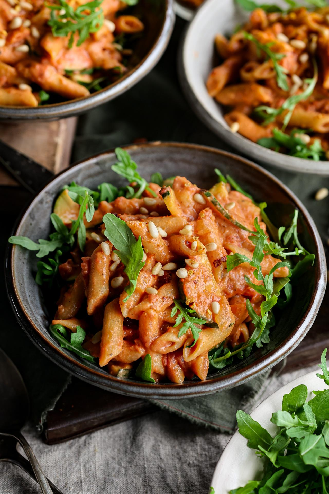

Hummus Pasta
back to home

This one-pot rosé pasta is a big bowl of warm, spicy goodness. It has a secret protein-rich ingredient, which also helps make this sauce extra creamy: hummus!
Ingredients:
- 1 Tbsp (15 mL) vegetable oil
- 4 cloves garlic, minced
- 1 large onion, diced
- 2 vegetable bouillon cubes
- 1 tsp (2 g) chili flakes
- 3 cups (285 g) dry penne pasta
- 3 cups (720 mL) passata sauce
- 1½ cups (360 mL) water
- ¾ cup (184 g) hummus
- 3 Tbsp (7 g) nutritional yeast flakes
- 1 zucchini, sliced into half-moons
- 1 roasted red bell pepper from a jar, chopped
- ½ cup (88 g) marinated artichoke hearts, chopped
- 1½ cups (30 g) arugula
Instructions:
- Add the oil to a large pot on medium-high heat. When hot, add the garlic, onion, bouillon, and chili flakes. Cook for 2 - 3 minutes.
- Then add the uncooked pasta, passata sauce, water, hummus, and nutritional yeast to the pot.
- Reduce heat to medium, partially cover with a lid, and cook for 10 minutes. Check on the pasta a few times and stir to prevent sticking to the bottom of the pot.
- Add the zucchini, cooking cream, bell pepper, and artichokes. Cook until the pasta is al dente, about another 5 minutes.
- Stir in the arugula when ready to serve. Garnish as desired, and enjoy!